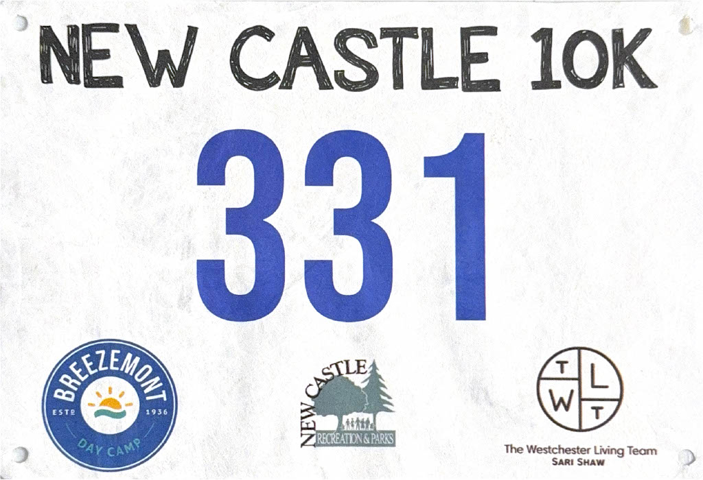
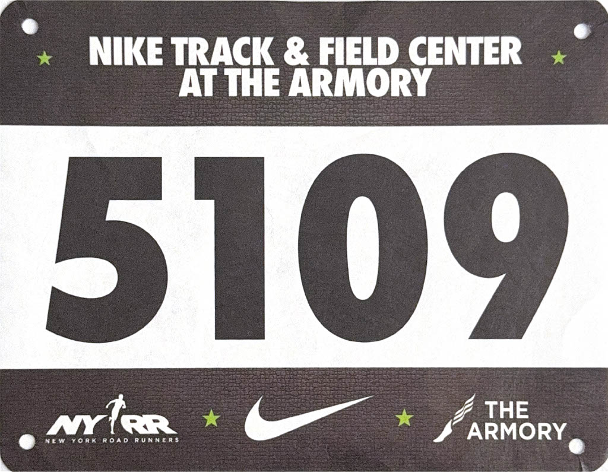
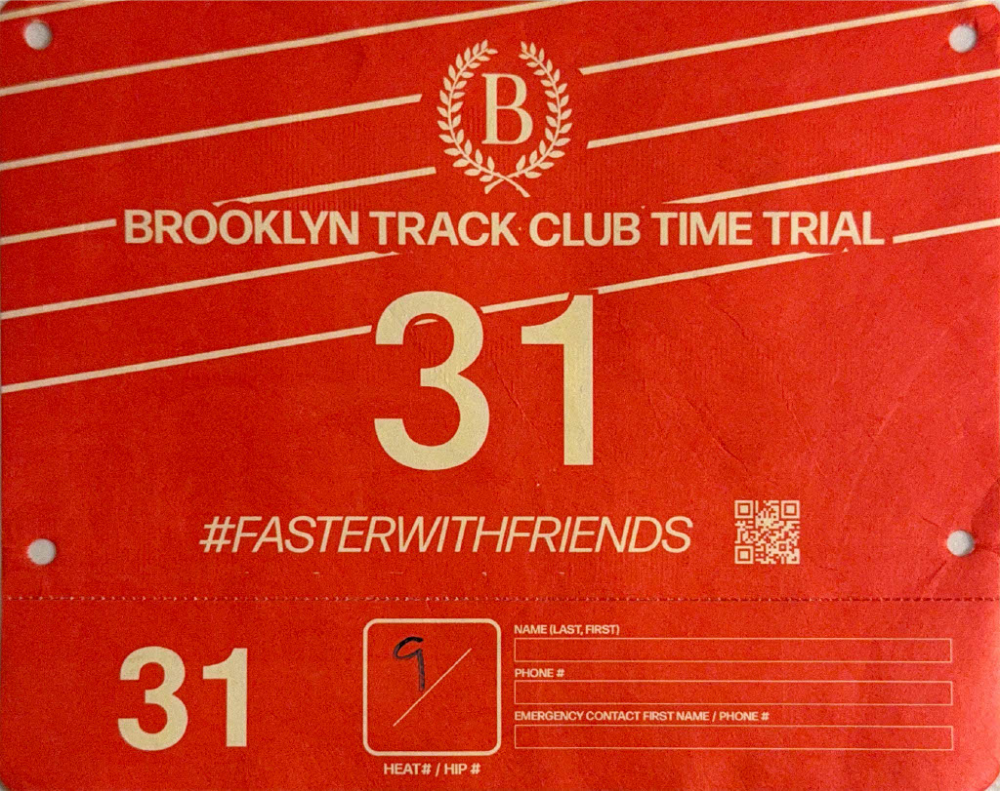

Running Bibs
Ever since I restarted my running journey in 2022, I started collecting running bibs as nice mementos (and easier to store than medals) from the races I ran in. They help symbolize the blood, sweat, and tears endured through each battle I faced... just kidding, it's not that dramatic. I just like collecting bibs.
My favorite bibs in my collection are my 2023 NYC Marathon bib (peep the top-right corner for the battle scar), my 2024 Geneva Marathon bib (first sub-3!), and my 2024 Brooklyn Track Club Mile time trial bib (first sub-5!).
Marathons
2022 Paris Marathon
2023 New York City Marathon
2024 Geneva Marathon
2024 New York City Marathon
Half-Marathons
2022 NYCRuns Central Park Half Marathon
2022 Princeton Half Marathon
2023 Chicago F^3 Half Marathon
2024 Chicago F^3 Half Marathon
2024 NYRR United Half Marathon
2024 NYRR Brooklyn Half Marathon
2024 Chicago LifeTime Half Marathon
2024 NYRR Staten Island Half Marathon
Road Races
2023 New Castle 10k
2023 JPMorgan Corporate Challenge
2024 OSR Bread Route Run #1
2024 JPMorgan Corporate Challenge
2024 NYRR Queens 10k
2024 Brooklyn Mile
2024 NYRR 5th Ave Mile
2024 Google 5k
Track Races
2023 Night at the Races #1
2024 Night at the Races #2
2024 Night at the Races #3
2024 Night at the Races #5
2024 Tracksmith Twilight 5k
2024 Brooklyn Track Club Mile Time Trial
2024 NYRR Summer Speed Series #1
2025 Night at the Races #2